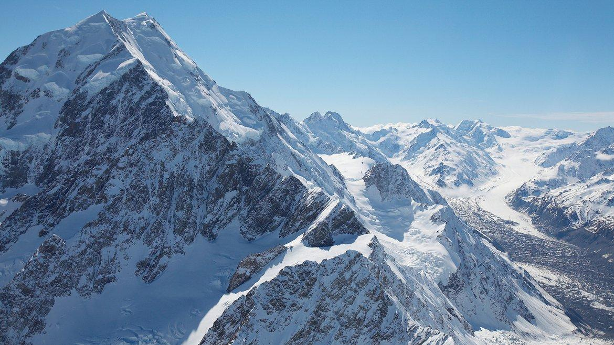
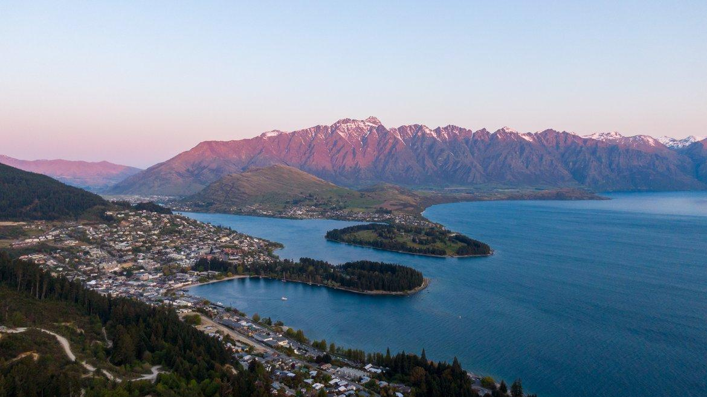
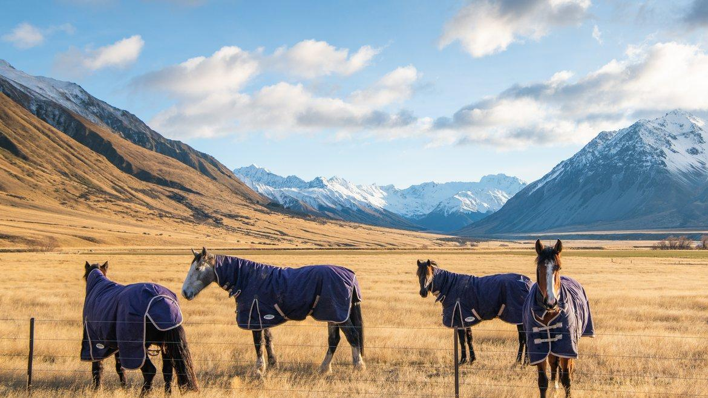
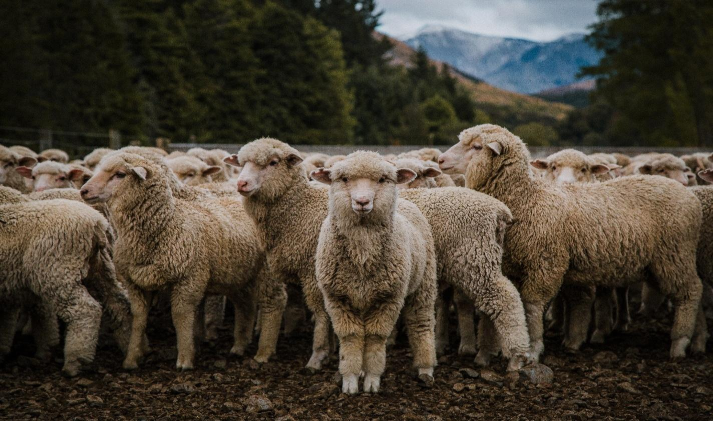
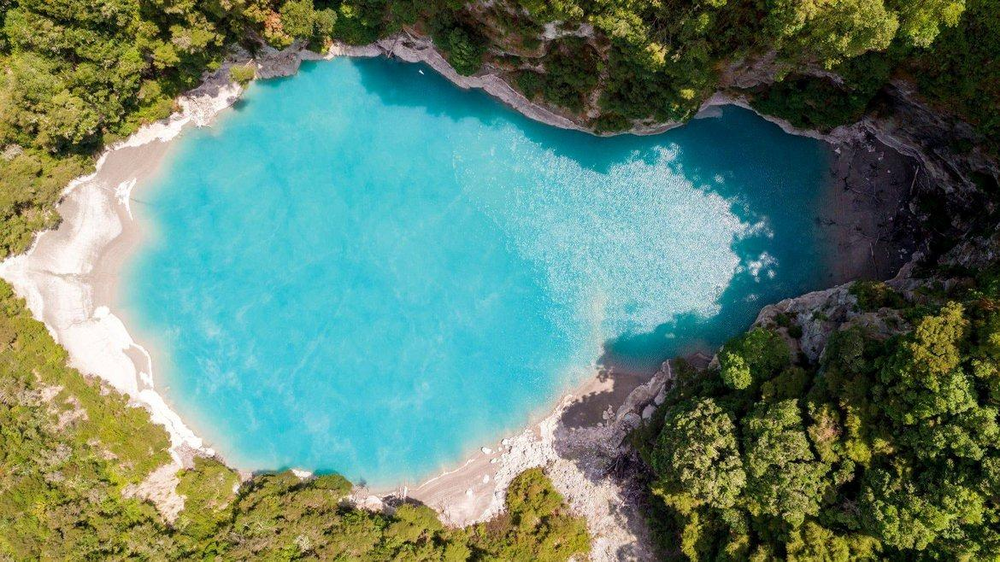
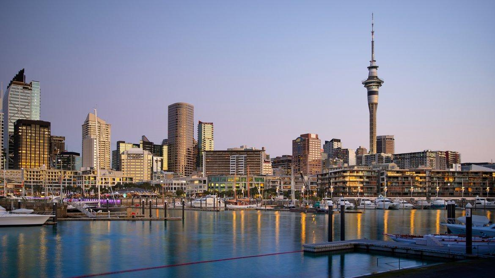

Day 01 · Sun
Auckland to Queenstown
Airside assistance in Auckland, domestic connection, SUV collection in Queenstown and about 20 min to ROKI.

Kira & Rahul · 27 Sep — 12 Oct 2026
15 nights, 5 properties, 2 domestic flights and 2 self-drive rental legs across New Zealand.
Trip overview
Five properties, two rental-car legs, two domestic flights and seven scheduled experiences.
Arrive in Auckland and connect to Queenstown. Drive from Queenstown to The Lindis and Flockhill, then return the first SUV in Christchurch. Fly to Rotorua, collect a second SUV, continue to Taupo and finish with one night in Auckland.
Route map
Map positions are approximate. Lines indicate itinerary sequence; road lines do not represent turn-by-turn routing.Map data © OpenStreetMap · CARTO

Sep 27 — Oct 1 · 4 nights
Connect from Auckland to Queenstown, collect the first rental SUV and stay four nights at ROKI Collection. Scheduled activities: Milford Sound flight and cruise, plus a Glenorchy jet-boat excursion.

Oct 1 — 5 · 4 nights
Drive about 2 hr 30 min from Queenstown to The Lindis. The four-night stay includes pre-dinner drinks and all meals, with guided riding, private stargazing and a private Aoraki helicopter excursion.

Oct 5 — 8 · 3 nights
Stay three nights at Flockhill Lodge on a 36,000-acre working high-country station. The booking includes all meals, a station tour and a full-day guided Lake Coleridge horse-trek excursion.

Oct 8 — 11 · 3 nights
Drive about 1 hr 30 min to Christchurch, return the first SUV, fly to Rotorua and collect the second SUV. Continue about one hour to Huka Lodge for three nights.

Oct 11 — 12 · 1 night
Drive about four hours from Taupo to Auckland, with optional stops at Hobbiton or Waitomo. Stay one night at Park Hyatt Auckland, then drive about 45 minutes to the airport.
Day-by-day itinerary
Filter by destination to isolate a stay. Durations, transport notes and inclusions follow the Southern Crossings itinerary.
Airside assistance in Auckland, domestic connection, SUV collection in Queenstown and about 20 min to ROKI.
Shared fixed-wing flights of about 35–40 min each way and a 1 hr 45 min nature cruise.
Drive about 45 min each way for a shared wilderness jet-boat activity lasting about 2 hr 30 min.
Optional Arrowtown, golf, hiking, film locations, Skyline Gondola or Lake Wakatipu cruise.
Drive about 2 hr 30 min via the Crown Range, Wanaka and Lindis Pass; four-night check-in.
About 2 hr guided high-country ride, followed by a private 1 hr 30 min–2 hr stargazing session.
Private helicopter flight to Aoraki/Mount Cook with Tasman Glacier landing and glacier-lake boat.
Optional walking, e-biking, fishing, riding, picnic or lodge activities.
Drive about 5 hr 30 min via Twizel and Lake Tekapo; three-night check-in at Flockhill.
About 1 hr 30 min covering station history, farming, biodiversity and regenerative plans.
Guided horseback excursion through mountain and farmland; total duration about seven hours.
Drive 1 hr 30 min, return SUV, fly 11:10am–1:00pm, collect second SUV and drive one hour to Taupo.
Drive about 45 min each way for a private 2 hr 30 min geothermal-valley walk.
Optional Huka Falls, Lake Taupo cruise, fishing, golf, geothermal sites or lodge activities.
Drive about four hours, with optional stops at Hobbiton or the Waitomo glowworm caves.
Drive about 45 min to Auckland International Airport and return the second rental SUV.
Accommodation
Dates, booked room categories, night counts and meal inclusions from the itinerary.
King One Bedroom Suite
27 Sep — 1 Oct
King Master Suite
1 — 5 Oct
King One Bedroom Deluxe Villa
5 — 8 Oct
King Lodge Suite with Fireplace
8 — 11 Oct
King Harbour View Room with Balcony
11 — 12 Oct
Travel logistics
Both domestic flights are excluded from the package price. Flight schedules and international connections require separate confirmation.
Auckland–Queenstown and Christchurch–Rotorua are marked as not included. Confirm schedules separately; the suggested Christchurch departure is Air New Zealand NZ5782 at 11:10am, arriving at 1:00pm.
Two full-size automatic SUV rentals include daily insurance, unlimited kilometres, loss damage waiver and one-way fees. Pick up in Queenstown and Rotorua; return in Christchurch and Auckland.
Late September and early October are spring. South Island alpine weather can change quickly; warm and waterproof layers are required. North Island temperatures are generally milder.
Queenstown to Ahuriri: about 2 hr 30 min. Ahuriri to Flockhill: about 5 hr 30 min. Flockhill to Christchurch: about 1 hr 30 min. Rotorua to Taupo: one hour. Taupo to Auckland: about four hours.